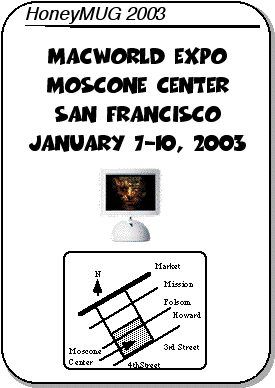

MacWorld Expo 2003 Meeting Notice

2002 MUG highlights
Last year, the top speed of Apple high-end G4 CPU was 867 MHz. One year later, the top speed is 1.25GHz. The Megahertz Myth is hurting Apple badly since it makes it very difficult to increase market share against Wintel marketing and pricing.
Our Art Services department is still Mac-based and successfully migrated to OS X. No new hardware has been purchased since we are still in the middle of the 3-year lease period.
Alex and Ron also installed and updated OS X on their work computers (PowerMac 9500 and G3 respectively) and successfully evaded the IT police.
Happy Holidays to all,I want to believe that there is some incredible purpose to our lives. Failing that, I want to find the single unifying element which makes all human life worthwhile....Surely there is some greater purpose served by our heartache and passion than the meager receipts of infirmity and death. -- Michael Lockhard
Alex
The Meeting
As usual, we will be having our regular lunch/dinner get-togethers at Macworld. The meetings will occur during all days of this years' show.Here is an ASCII rendition of the meeting place for MacWorld Expo. We will meet at the lobby of the South Hall of Moscone Center.
The meeting times are
* January 7, 2003 between 1:00- 1:15pm
* January 8, 2003 between 1:00- 1:15pm
* January 9, 2003 between 1:00- 1:15pm
* January 10, 2003 between 12:00-12:15pm
If you get lost, give ASACMUG a call:
Alex Morando 909-262-3692
Mike Quan 310-463-2708
[ASCII diagram removed]